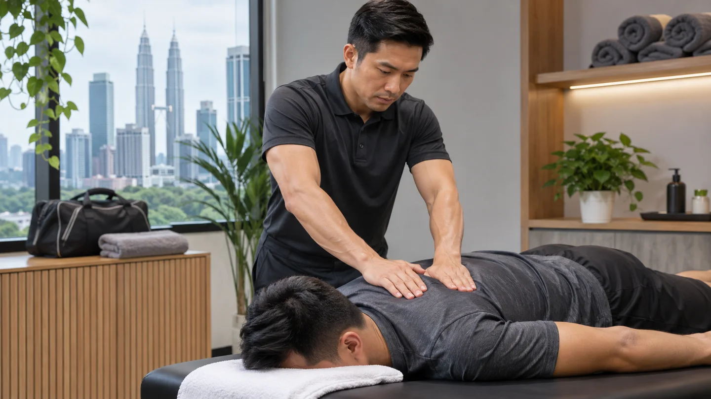

ACTIVE WELLNESS
Deep Tissue or Sports Massage KL: Which Should You Choose After the Gym?

Whether you enjoy lifting weights, running or regular fitness classes, an active lifestyle can leave you looking forward to a proper moment of rest. If you are considering a massage after training in Kuala Lumpur, you may wonder whether deep tissue massage or sports massage is the better choice.
At Man to Man Massage KL, both options are available for men looking for a personalised wellness experience. The right choice depends on how you feel, the activities you enjoy and the type of pressure you prefer.
What Is Deep Tissue Massage?
Deep tissue massage is a focused style of bodywork that uses controlled, sustained pressure on selected muscle areas. Rather than applying strong pressure everywhere, the therapist can adjust the technique to suit your preferences and concentrate on the areas you identify.
Men who regularly carry gym equipment, perform resistance training or repeat similar movements may prefer focused attention on particular muscles. Our deep tissue massage in KL is an option to discuss if your priority is targeted muscular relaxation instead of a light, general massage.
What Is Sports Massage?
Sports massage is a massage style associated with physically active individuals. The session can be tailored around the movements and muscle groups involved in your training routine, whether you are a recreational gym-goer, runner or someone who exercises regularly.
You do not need to be a professional athlete to ask about sports massage. Tell the therapist what activities you normally do, which muscle areas you would like addressed and whether you prefer a gentle or more focused session. Our massage services include a sports and gym massage option.
Deep Tissue vs Sports Massage: Key Differences
Both styles can involve focused muscle work, but their emphasis may differ according to your goals. Use these comparisons as a starting point for your discussion with the therapist.
| Consideration | Deep tissue massage | Sports massage |
|---|---|---|
| Typical focus | Particular areas of muscular tightness | Muscle groups involved in physical activities |
| Approach | Slow, controlled pressure | Techniques adapted to your activity and preferences |
| Pressure | Can range from moderate to firm | Adjusted according to your comfort |
| Who may prefer it | Men seeking more targeted muscle work | Gym-goers, runners and active men |
Neither massage needs to be excessively painful. You should always feel able to ask your therapist to adjust the pressure or avoid an area. Read more in our guide, Is deep tissue massage painful?
Which Muscle Areas Should You Discuss With Your Therapist?
Different workouts involve different movements. Before your massage, explain the training you have done recently so your therapist understands where you would like attention.
- Upper-body workouts: Discuss your shoulders, upper back and arms after pressing or pulling exercises.
- Leg workouts: Tell your therapist if your thighs, calves or glutes feel tired, and establish the areas you are comfortable having treated.
- Running or cycling: Explain your usual distance, intensity and areas of muscular fatigue.
- Full-body training: Share your overall priorities and whether you would prefer a gentler or more focused session.
If you have a recent injury, swelling or unusual pain, seek appropriate healthcare advice before arranging massage. Massage is not a substitute for assessment or treatment of an injury.
How to Make Your Massage Feel More Personalised
Explain Your Training Routine
Instead of simply requesting a strong massage, describe your workout and the areas that feel tired. A clear explanation helps the therapist discuss the most appropriate massage style and establish your preferences before starting.
Choose Your Preferred Pressure
Firm pressure is not automatically better. You may appreciate a gentler approach following a particularly demanding workout. During the appointment, let the therapist know if you want pressure increased, reduced or changed to a different area.
Give Yourself Time to Rest
Plan your appointment at a time when you can enjoy the experience without rushing back to training. Leave room to relax afterwards and consider how comfortable you feel before returning to your usual activities.
Why Choose a Male Therapist in Kuala Lumpur?
Some men prefer receiving bodywork from a male therapist because it helps them feel more comfortable communicating their needs and boundaries. Our inclusive male-to-male massage service welcomes gay, bisexual and straight men, including fitness enthusiasts visiting or living in Malaysia.
Make Time for a Post-Gym Wellness Break in KL
Whether you train in Kuala Lumpur regularly or are visiting Malaysia and keeping up with your fitness routine, don't miss the opportunity to explore a personalised wellness experience. Send us a WhatsApp message with your preferred date, time and massage style. We can discuss an incall appointment or check whether a standard outcall wellness session is available at your location.